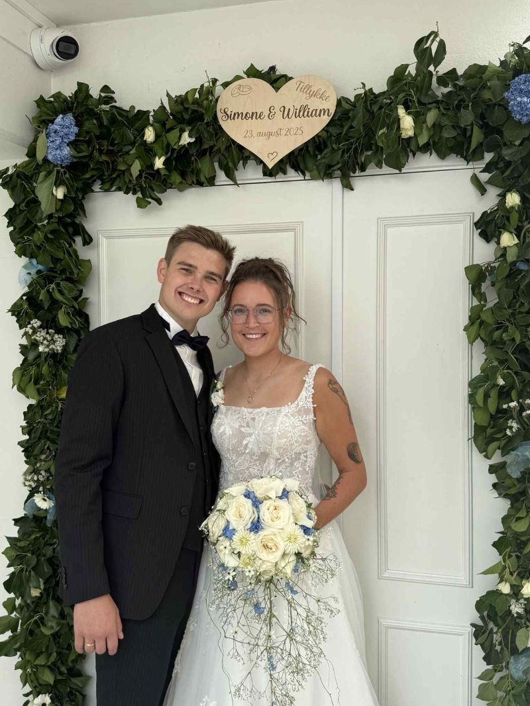

Om mig
01. Om mig
Jeg er den slags menneske, der bliver tændt af en god historie og et flot layout på samme tid – kreativ, struktureret og altid med blik for detaljen. Til daglig er det Kunsthal Aarhus, der får glæde af det, hvor jeg er Communications Officer & Online Manager.
Jeg startede faktisk med en læreruddannelse, inden kunsthistorien greb mig – og den kombination af formidling og fortælling er stadig det, der driver mig i dag, uanset om det er en Instagram-caption eller en pressemeddelelse.
Før kommunikationen arbejdede jeg blandt andet i 7-Eleven og i køkkenet hos Anettes Sandwich – jobs der lærte mig at holde hovedet koldt, når det går stærkt.
02. Uddannelse
Enkeltfag, Digital Content Marketing
Master of Arts, Kunsthistorie
Bachelor i kunsthistorie, Museologi/museumsstudier
Lærer (bachelor), Læreruddannelse, dansk
03. Uden for arbejde
Jeg er gift med William, og vi bor i Aarhus, hvor vi venter vores første barn til december.
Karate har fyldt en stor del af mit liv – ni et halvt år som instruktør i Struer Karate Klub, og tre år på det japanske landshold under Japan Karate Shoto Federation.

Simone & William, 23. august 2025
Lad os snakke
Altid klar på en snak om kommunikation, kultur eller gode historier.